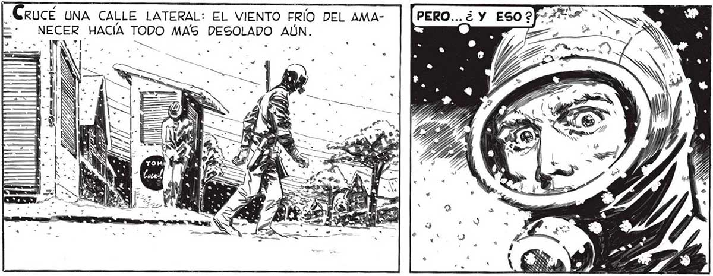
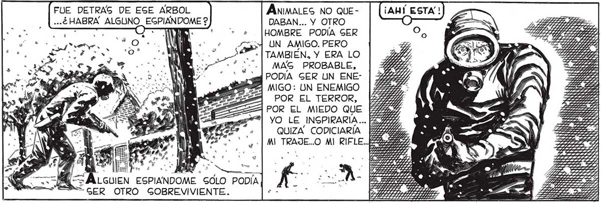
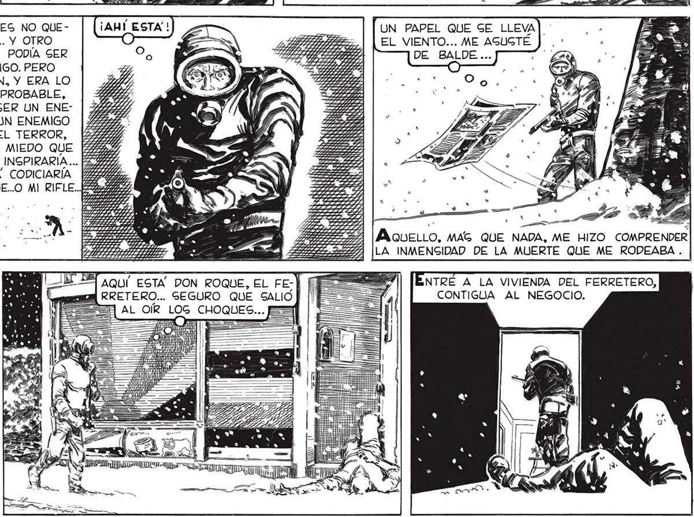

RUCÉ UNA CALLE LATERAL: EL VIENTO FRÍO DEL AMANECER HACÍA TODO MAS RESDLADO AÚN. o úl ———— A == Lo aa y a -— Y) E A ———_—_e TS == , == o n— —A — o ———— ==. == .*e En caDA UNA DE EGAG CAGAS, DONDE AYER MIGMO VIVÍAN MUJERES, HOMBRES, CHICOS, AHORA GOLO HABÍA CUERPOG GIN VIDA. LA CALLE ERA UN CEMENTERIO. Y EL AIRE EG; TABA TAN VACIO DE PAJAROS... PERO. .¿ Y ESO? e úl JURARIA QUE VI “ | MOVERSE ALGO... * e 00 No vi napa. Y, SIN EMBARGO, —. ESTABA GEGURO QUE ALLÍ, A. POCOS PAGOS, ALGO GE HABÍA ———ENY MOVIDO. . ÁnimaLeS NO QUEDABAN... Y OTRO HOMBRE PODÍA GER UN AMIGO. PERO - | TAMBIÉN, Y ERA LO MAG PROBABLE, PODÍA GER UN ENEUN PAPEL QUE GE LLEVA| EL VIENTO... ME AGUGTE POR EL TERROR, POR EL MIEDO QUE YO LE INSPIRARIA... QUIZA” CODICIARÍA MI TRAJE..O MI RIFLE... AobeLo, MAG QUE NADA, ME HIZO COMPRENDER LA INMENSIDAD DE LA MUERTE QUE ME RODEABA . NTRÉ A LA VIVIENDA DEL FERRETERO, CONTIGUA AL NEGOCIO. FT AQUÍ ESTA DON ROQUE, EL FE-] | RRETERO... SEGURO QUE SALIÓ ... QUE UN PAPEL VOLANDO ME HABIA SOBREGALTADO... MEJOR QUE ME APURE. TANTA GOLEDAD ME VUELVE NERVIOGO ¡OJALA” EGTUVIERA YA DE Ed EN CASA ...! Y= erase mu a E i > 7 _ AA AAA eS tS A


